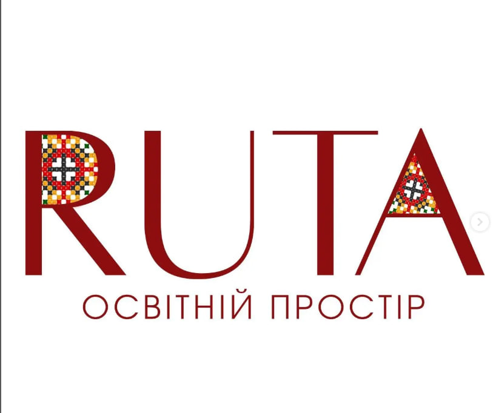

Привіт, друже!👋👋
Прийшов час знайомитися ближче!
Мене звати Анна, мені 36, і останні 13 років я працюю з дітьми та
дорослими, викладаючи англійську мову.👩🏫🏫📚🖋️ У період з 2012 по 2023
роки працювала у державних школах, знаю, як це проводити уроки як з 5
учнями, так і з 35.
Після деокупації найкращого міста на Землі ми повернулися додому, у
Балаклію, і було прийнято рішення про припинення роботи в державній
школі.
Тож, пробувши вдома рік, проаналізувавши проблеми і запити, було
прийнято рішення про відкриття невеличкого освітнього простору, де
діти працюватимуть не онлайн💻🖥️, а на живих зустрічах, в маленьких
групах, отримуватимуть можливість соціалізуватися та покращувати
знання з англійської мови.
Ми всі знаємо, що досягає успіху той, хто іде до своєї мети, не
дивлячись ні на які проблеми, тож у вересні 2024 року, з теплом,
любов'ю до дітей і своєї роботи, ми відкрили двері нашого освітнього
простору.
На кінець 2024-2025 навчального року у нас функціонує 13 груп (учні
1-9 класів).
Наш освітній простір - моя велика, тепер уже здійснена мрія🤩, і кожен
її учасник - член моєї освітньої родини. А в сім'ї до всіх треба
відноситися з любов'ю, теплом і вдячністю.
Тож, запрошуємо вас долучитися до нашої family, і ви зрозумієте, що
англійська, це круто, цікаво, іноді складно, але коли поряд той, хто
прямує разом з тобою до мети, то всі проблеми вирішуються швидко.
💖💖💖 З любов'ю, Анна)
P.S. Іноді діти називають мене "жінка-шпаргалка". Цікаво чому?
Приходь, і все зрозумієш🤣😍
....
...
...
Літо 2025 готує багато цікавинок!
Ми підготували для вас цікаві граматичні курси, проаналізували запити
дітей, і готові покращувати вашу англійську цікаво разом!
‼️Але! Повторюся вкотре, що навчання, це процес, де "тяжко працюють"
всі сторони, включаючи батьків. Тільки разом ми можемо досягнути
успіху і знайти ті ключі, які допоможуть відкритися кожній дитині🔑🔑!